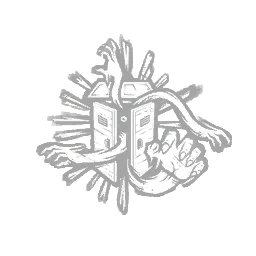
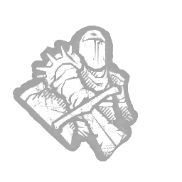
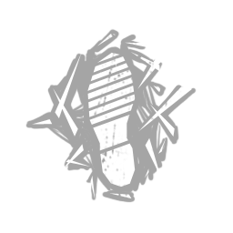
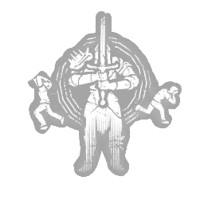
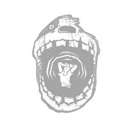
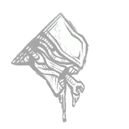
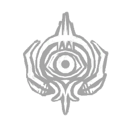
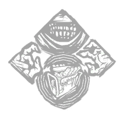

キラールール
キラー制限
- 使用禁止キラー：スカルマーチャント
- 同一チームは大会全体を通して同じキラーを再使用できない。担当者が変わっても使用履歴を引き継ぐ。
- 無効試合・未実施試合のキラーは使用済みにしない。
- ジャッジメントは使用可能。
禁止パーク

露見する闇
隠れ場なし
捕食者狩りの興奮

闇との対面
幻影の震撼
究極の武器
天界の証人※8/27追加条件付きパーク

アンフォーシーン屋内MAPでは使用禁止。
死人のスイッチ
シンギュラリティでは使用禁止。
キラー別アドオン制限
- 「単体使用」とは、そのアドオンを使用する場合に、他のアドオンを併用できないことを指す。
- ナース：アンコモン以下のみ使用可能。
- スピリット：「母娘の指輪」は単体使用のみ。
- ブライト：「化合物33」は単体使用のみ。「玉虫色のラベル」「錬金術師の指輪」は使用禁止。
- ヒルビリー：「玉虫色の彫刻」「軽量チェーン」使用時、併用するもう一方はアンコモン以下のみ。
- プレイグ：「黒のお香」は単体使用のみ。
- セノバイト：「技師の犬歯」は単体使用のみ。
- シンギュラリティ：「拒否された請求フォーム」は単体使用のみ。
- ツインズ：「沈黙の布」は単体使用のみ。
- 喰種：「ヤモリのマスク」は使用禁止。「赤頭のムカデ」は単体使用のみ。
- ガスー：「ニワトリの頭」使用時、併用するもう一方はアンコモン以下のみ。「ボロボロのガウン」「観劇用の双眼鏡」「ブタの目」は使用禁止。
- ファースト：「玉虫色のソテリアチップ」「クロゴケグモ」「電極キャップ」は使用禁止。
- ダークロード：「アンフアゥグリアの犬歯」は使用禁止。
- ジェイソン：「パーティーホーン」「寝袋」は使用禁止。
- ハントレス：ギデオン使用時「玉虫色の刃」は使用禁止。
禁止スキン
- ハントレス：「鹿女」「フェイスメルターエディ」
- ナース：「コレクターの呪い」
キラー別カード
各キラーの使用可否と個別制限を確認できます。共通ルールと共通禁止パークは詳細内に分けて表示します。